Chapter 5: Noun — naam wale shabd¶
Noun wo shabd hai jo kisi insaan, jagah, cheez ya bhaav ka naam batata hai. Har vaakya ki buniyaad yahi hai — pehle koi hota hai, phir wo kuch karta hai. Noun ke teen hisse hain jo Indian speakers ko sabse zyada pakadte hain: countable vs uncountable, plural banana, aur apostrophe kahan lagta hai. Teeno is chapter me.
Ek line me
A noun is a word that names a person, place, thing, animal, or idea. Jiska naam liya ja sake — wo noun hai.
- My brother works in Chennai. Mera bhai Chennai me kaam karta hai. (insaan + jagah)
- Honesty is the best policy. Imaandaari bhi noun hai — chhua nahi ja sakta, par naam hai.
- The team won two matches. Samooh ka naam bhi noun, cheez ka naam bhi noun.
5.1 Noun ke prakaar — ek naksha¶
Noun ko do tarah se baanta jaata hai, aur dono baantein saath chalti hain. Pehle naam ke hisaab se (proper, common, collective, abstract, material), aur phir ginti ke hisaab se (countable, uncountable). Ek hi noun dono list me hoga — jaise "water" common hai aur uncountable bhi.

5.2 Paanch prakaar, thoda detail me¶
| Prakaar | Matlab | Examples | Dhyan |
|---|---|---|---|
| Proper | Kisi khaas ek cheez ka apna naam | Ravi, Ganga, India, Diwali, Toyota | Hamesha capital letter se |
| Common | Poori jaati ka aam naam | boy, river, country, festival, car | Small letter, aur a/an/the lagta hai |
| Collective | Bahut saari cheezon ka ek samooh | team, family, crowd, class, herd | Dikhne me ek, matlab me bahut |
| Abstract | Jo chhua na ja sake — bhaav, gun, haalat | honesty, anger, childhood, freedom | Aksar uncountable hote hain |
| Material | Jis cheez se kuch bana ho | gold, cotton, rice, water, iron | Uncountable, isliye "a gold" nahi |
Collective noun — singular ya plural?
Jab poora samooh ek saath kaam kar raha ho to singular: The team is playing well.
Jab samooh ke log alag-alag kaam kar rahe hon to plural bhi theek hai: The team are arguing among themselves. Bharat me pehla roop zyada chalta hai — doubt ho to singular lagao.
Quick guide — saare prakaar ek nazar me¶
Naam ke hisaab se paanch prakaar upar the. Iske alawa do aur tarah se noun ko dekha jaata hai — gin sakte hain ya nahi (countable / uncountable), aur kitne shabdon se bana (compound).
| Type | Pehchaan ka sawaal | Examples |
|---|---|---|
| Proper | Kisi ek ka khaas naam? (capital) | Ravi, Delhi, Ganga |
| Common | Poori jaati ka aam naam? | boy, city, river |
| Collective | Ek samooh ka naam? | team, army, herd |
| Material | Kis cheez se bana? | gold, wood, cotton |
| Abstract | Chhu nahi sakte — bhaav, gun, haalat? | love, honesty, childhood |
| Countable | Gin sakte hain? (a / an, plural) | a pen, two pens |
| Uncountable | Gin nahi sakte? (no a / an, no plural) | water, advice, furniture |
| Compound | Do ya zyada shabd milkar ek naam? | toothpaste, bus stop, mother-in-law |
Compound noun ke teen roop
Ek shabd me judkar — toothbrush, classroom, sunlight
Alag-alag likhkar — bus stop, ice cream, post office
Hyphen ke saath — mother-in-law, passer-by, well-wisher Kaunsa roop sahi hai, ye dictionary batati hai — rule se nahi, aadat se aata hai.
5.3 Countable aur Uncountable — yahi sabse badi gadbad hai¶
Hindi me hum "ek paani", "do advice" bol dete hain aur baat samajh aa jaati hai. English me aisa nahi chalta. Kuch noun English ki nazar me dher hain, tukde nahi — aur dher ko ginaa nahi jaata, naapa jaata hai.
| Countable | Uncountable | |
|---|---|---|
| a / an | a book, an apple | ✗ a water, ✗ an advice |
| Plural | books, apples | ✗ waters, ✗ advices |
| Kitne? | many, few, a few, number of | much, little, a little, amount of |
| Ginti | two books | two glasses of water |
| Verb | These books are new. | This water is cold. |
Ye noun uncountable hain — inka plural kabhi na banao
information, advice, furniture, luggage, equipment, machinery, stationery, news, work, bread, rice, money, traffic, scenery, knowledge, progress, homework, research, hair (sar ke baal, poore). Inke peeche -s lagte hi vaakya galat ho jaata hai.
Ginti karni ho to maapne wala shabd aage lagao — yahi asli tareeka hai:
| Galat | Sahi |
|---|---|
| two informations | two pieces of information |
| many advices | a lot of advice / several pieces of advice |
| three furnitures | three pieces of furniture |
| two breads | two slices / loaves of bread |
| four luggages | four bags of luggage |
| a news | a piece of news / some news |
Kuch noun dono hote hain — matlab badal jaata hai
| Shabd | Uncountable me | Countable me |
|---|---|---|
| hair | her hair is long (poore baal) | two hairs in my food (do baal) |
| time | I have no time (samay) | three times (baar) |
| paper | I need paper (kaagaz) | today's paper (akhbaar) |
| water | drink water (paani) | the waters of the Ganga (saahityik) |
| experience | he has experience (tajurba) | a strange experience (ek ghatna) |
5.4 Plural banane ke rule¶
Aksar sirf -s lagta hai. Par aath jagah thoda alag hota hai. Ek baar table dekh lo, zyadatar kaam ho jaayega.
| Shabd kaise khatam hota hai | Kya karo | Example |
|---|---|---|
| Normal | + s | book → books, pen → pens |
| -s, -ss, -sh, -ch, -x, -z | + es | bus → buses, box → boxes, watch → watches |
| consonant + y | y → ies | city → cities, baby → babies |
| vowel + y | + s (y rehta hai) | boy → boys, day → days |
| -f, -fe (kuch me) | f → ves | leaf → leaves, knife → knives, wife → wives |
| -o (kuch me) | + es | mango → mangoes, hero → heroes, potato → potatoes |
| -o (videshi shabd) | + s | photos, pianos, radios, zoos |
| Bilkul alag (irregular) | yaad karo | man → men, child → children, tooth → teeth |
Wo plurals jo kisi rule me nahi aate¶
| Singular | Plural | Singular | Plural |
|---|---|---|---|
| man | men | woman | women |
| child | children | person | people |
| tooth | teeth | foot | feet |
| mouse | mice | goose | geese |
| ox | oxen | louse | lice |
| sheep | sheep | deer | deer |
| fish | fish | series | series |
| criterion | criteria | analysis | analyses |
Ye hamesha plural hote hain
trousers, jeans, scissors, spectacles, glasses, clothes, goods, thanks, surroundings, premises, scales — inka singular nahi hota. Ek jodi batana ho to: a pair of trousers.
"My trouser is dirty" nahi — "My trousers are dirty".
Compound noun ka plural
Asli shabd par -s lagta hai, aakhir me nahi: brothers-in-law, passers-by, *Commanders-in-Chief. Par aaj ki English me son-in-laws* bhi suna jaata hai — exam me purana roop hi likho.
5.5 Possessive — apostrophe kahan lagega¶
Hindi me "ka, ki, ke" hota hai. English me 's ya of. Niyam seedha hai — pehle ye dekho ki noun singular hai ya plural, aur plural pehle se -s par khatam ho raha hai ya nahi.
| Haalat | Rule | Example |
|---|---|---|
| Singular noun | + 's | my sister's phone |
| Plural -s par khatam | sirf ' | the students' hostel |
| Irregular plural | + 's | the children's books, men's shoes |
| Do log, ek cheez | aakhir wale par 's | Ram and Shyam's shop (ek hi dukaan) |
| Do log, alag cheezein | dono par 's | Ram's and Shyam's shops (do dukaanein) |
| Bejaan cheez | of use karo | the roof of the house |
| Samay / naap | 's chalta hai | a day's work, two weeks' notice |
its vs it's — ye 90% log galat likhte hain
- Galat: The dog wagged it's tail.
- Sahi: The dog wagged its tail.
- Kyun: its = uska (possessive). it's = it is. Test: vaakya me "it is" rakh kar padho — agar bemaani lage to apostrophe hata do.
5.6 Noun vaakya me kahan baithta hai¶
| Kaam | Example | Matlab |
|---|---|---|
| Subject | Ravi called me. | kaam karne wala |
| Object | I called Ravi. | jis par kaam hua |
| Indirect object | I gave Ravi a pen. | kiske liye |
| Complement | He became a doctor. | subject ke baare me |
| Preposition ke baad | She sat on the chair. | object of preposition |
| Address karna | Sir, may I come in? | jise bula rahe hain |
5.7 Wo galtiyan jo hum sach me karte hain¶
Noun ki sabse aam Indian-English galtiyan
- Galat: She is one of my friend.
- Sahi: She is one of my friends.
-
Kyun: "One of" ka matlab hai — bahut me se ek. Jab bahut hain to noun plural hoga. Pehle group banao (my friends), phir usme se ek nikaalo (one of).
-
Galat: Please give me some informations.
- Sahi: Please give me some information.
-
Kyun: Information uncountable hai — English use dher maanti hai, tukde nahi. Ginti karni ho to two pieces of information.
-
Galat: He gave me many good advices.
- Sahi: He gave me a lot of good advice.
-
Kyun: Advice ka plural nahi hota, aur uske saath "many" bhi nahi — "much" ya "a lot of". Dhyan rakho: advice noun hai, advise verb.
-
Galat: She is my cousin sister.
- Sahi: She is my cousin.
-
Kyun: "Cousin" ek poora noun hai — usme bhai/behen jodna zaroori nahi. Agar rishta saaf karna ho to kaho: She is my cousin — my uncle's daughter.
-
Galat: I bought two new furnitures.
- Sahi: I bought two new pieces of furniture.
-
Kyun: Furniture poora samaan hai, ek-ek item nahi. Ek item batana ho to naam lo: a table, a sofa.
-
Galat: My all luggages are in the car.
- Sahi: All my luggage is in the car.
-
Kyun: Do galtiyan ek saath: luggage uncountable hai (plural nahi), aur kram "all my" hota hai, "my all" nahi. Uncountable ke saath verb bhi singular — is.
-
Galat: The peoples of my village are very kind.
- Sahi: The people of my village are very kind.
-
Kyun: "People" khud hi plural hai — person ka plural. "Peoples" sirf tab chalta hai jab alag-alag jaatiyon ki baat ho: the peoples of Asia.
-
Galat: I have two womens in my team.
- Sahi: I have two women in my team.
- Kyun: "Women" pehle se plural hai. Irregular plurals par dobara -s kabhi nahi lagta — na "childrens", na "mens", na "teeths".
5.8 Yaad rakhne wali chhoti baat¶
Teen sawaal, har noun ke liye
1. Gina ja sakta hai? → haan to a/an aur plural; nahi to bina a/an, singular verb.
2. Kiska hai? → -s par khatam hai to sirf ', warna 's.
3. Ek hai ya bahut? → verb ko usi ke hisaab se badlo.
5.9 Practice — Nouns¶
Exercise 1
She is one of my ___ from college.
- friends
- friend
- friend's
- friends'
Hint: 'One of' ke baad group aata hai.
Jawaab
friends
'One of' ka matlab hai bahut me se ek — to group plural hona chahiye. Pehle group (friends), phir usme se ek chuna gaya.
Exercise 2
I need some ___ about the admission process.
- information
- informations
- an information
- informations'
Hint: Ye noun uncountable hai.
Jawaab
information
Information uncountable hai — English usse dher maanti hai, isliye na -s lagta hai, na a/an. Ginti karni ho to 'two pieces of information'.
Exercise 3
Kaunsa plural sahi hai?
- children
- childrens
- childs
- childrens'
Jawaab
children
Child ka plural children hai — ye irregular hai. Irregular plural par dobara -s nahi lagta, isliye 'childrens' hamesha galat hai.
Exercise 4
The ___ hostel is behind the library. (bahut saare students ka hostel)
- students'
- student's
- students
- students's
Hint: Plural pehle se -s par khatam ho raha hai.
Jawaab
students'
Plural 'students' pehle se -s par khatam hai, isliye sirf apostrophe lagta hai — koi doosra s nahi. Ek student ka hota to student's.
Exercise 5
The dog wagged ___ tail happily.
Hint: Possessive chahiye, 'it is' nahi.
Jawaab
its
'its' possessive hai — uska. 'it's' ka matlab 'it is' hota hai, aur yahan 'the dog wagged it is tail' bemaani ho jaata.
Exercise 6
Three ___ of furniture arrived yesterday. (ginti ka shabd)
Hint: Uncountable noun ko ginane ke liye beech me ek shabd chahiye.
Jawaab
pieces
Furniture uncountable hai, isliye seedha gin nahi sakte. Beech me maapne wala shabd — pieces — lagaate hain.
Exercise 7
Is vaakya me ek galti hai — galat shabd par tap karo.
She is my cousin sister from Nagpur.
Jawaab
Galat shabd: sister.
Sahi roop: She is my cousin from Nagpur.
English me 'cousin' apne aap me poora shabd hai — usme sister ya brother jodne ki zaroorat nahi. Hindi ke 'cousin behen' se ye aadat aati hai.
Exercise 8
Galat shabd dhoondo.
He gave me many advices about the exam.
Jawaab
Galat shabd: advices.
Sahi roop: He gave me a lot of advice about the exam.
Advice uncountable hai — na plural banta hai, na 'many' chalta hai. Uske saath 'much' ya 'a lot of' aata hai.
Exercise 9
Ek shabd galat hai — dhoondo.
My trouser is lying on the bed.
Jawaab
Galat shabd: trouser.
Sahi roop: My trousers are lying on the bed.
Trousers hamesha plural hota hai, kyunki do paay hoti hain. Isi liye verb bhi 'are' hoga. Ek jodi batana ho to 'a pair of trousers'.
Exercise 10
'Toothpaste', 'bus stop' aur 'mother-in-law' — teeno kis prakaar ke noun hain?
- Compound
- Collective
- Abstract
- Material
Hint: Kitne shabdon se bane hain?
Jawaab
Compound
Do ya zyada shabd milkar ek naam banayein to compound noun — chahe jude hon (toothpaste), alag hon (bus stop), ya hyphen ke saath (mother-in-law).
Exercise 11
Kaunsa noun uncountable hai?
- luggage
- bag
- suitcase
- ticket
Hint: Iske saath 'a' nahi lagta, plural bhi nahi banta.
Jawaab
luggage
'luggage' uncountable hai — 'a luggage' ya 'luggages' nahi. Ginna ho to 'two pieces of luggage' ya 'two bags'. Baaki teeno countable hain.
Exercise 12
Noun ko uske prakaar se jodo.
| A | B |
|---|---|
| Mumbai | abstract noun |
| crowd | material noun |
| kindness | common noun |
| cotton | proper noun |
| chair | collective noun |
Jawaab
Mumbai — proper noun; crowd — collective noun; kindness — abstract noun; cotton — material noun; chair — common noun
Khaas naam proper, samooh collective, bhaav abstract, banane wali cheez material, aur poori jaati ka aam naam common hota hai.
Exercise 13
Sahi kram me vaakya banao — possessive ka istemaal hai.
Shabd: phone / is / the / My / sister's / on / table
Jawaab
My sister's phone is on the table
Possessive 's hamesha us noun ke turant baad aata hai jiski cheez hai, aur cheez ka naam uske foran baad — sister's phone.
Exercise 14
Ye line bol ke dekho. 'friends' ke aakhir me -s ki aawaz saaf nikaalni hai.
Jawaab
Bolo: She is one of my closest friends
Hum log aakhir ka -s nigal jaate hain, isliye 'one of my friend' sunai deta hai. Jaan-boojh kar -s ko bahar nikaalo — yahi sudhaar hai.
Aage kya karein
Apne roz ke dus vaakya likho aur har noun ke neeche line khincho — phir poochho "countable hai ya nahi?". Do din me uncountable list dimaag me bas jaayegi. Agla chapter Pronoun — noun ka shortcut.